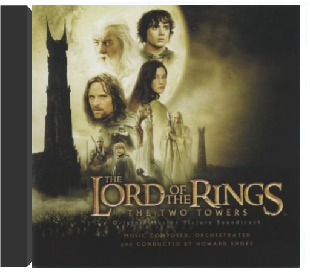

Film encensé par la critique, Le Fabuleux Destin d'Amélie Poulain ne pouvait s'offrir qu'au plus parisien des musiciens bretons : Yann Tiersen. Auteur de plusieurs albums (L'Absente, Le Phare), dont certains titres de la bande originale sont d'ailleurs tirés, le compositeur offre à Montmartre ses plus belles notes depuis des lustres. "La Valse d'Amélie" nous ramène des décennies en arrière, pourtant le morceau semble on ne peut plus présent. Moderne tout en étant nostalgique, parisienne tout en étant teintée de couleurs provinciales, la musique du Fabuleux Destin d'Amélie Poulain est une pure merveille de fraîcheur ("La Redécouverte") et de spontanéite ("Le Moulin"). Simple, d'orchestration reduite – piano, accordéon, guitare – la musique respire la poésie de son auteur et comporte la même vivacité que le brillant metteur en scène Jean-Pierre Jeunet. Humaine, proche de nous, la bande originale du Fabuleux Destin d'Amélie Poulain devient, de par son lyrisme et son charme, le fabuleux destin de celui qui l'écoutera. —Didier Leprêtre  Limited 180gm audiophile vinyl LP pressing. Lee Dorsey began his career as a lightweight boxer in the early 1950s and moved on to become an influential African American pop and R&B singer during the 1960s. His successful period began when he met songwriter and record producer Allen Toussaint. In 1970, Dorsey recorded the Yes We Can album again with Toussaint together with the support band The Meters. Several of the songs were covered by major artists who scored hits with them later that decade; 'Yes We Can' by The Pointer Sisters and 'Sneakin' Sally Thru The Alley' by Robert Palmer. The other songs are straight up funky tracks and have a variety of styles and sounds. Included are the protest soul recording 'Who's Gonna' Help Brother Get Further' and the somewhat hilarious comedy song 'Would You'. All in all it stands as a great soul album for that time. |  Attendu depuis des années, la trilogie du Seigneur des Anneaux voit enfin le jour sous la houlette du metteur en scène Peter Jackson, aidé dans sa tâche par le compositeur Howard Shore. Spécialiste de musiques contemporaines, le musicien offre sa partition la plus symphonique et impose un style choral étonnant. Utilisant le langage codé inventé par l'auteur des romans, J.R.R.Tolkien, Howard Shore fait donner ses chœurs et embellit ses différents thèmes. S'éloignant de son style alternatif habituel, le compositeur de The Cell a écrit 17 morceaux, illustrant les 17 chapitres de l'acte 1 : La Communauté de L'Anneau. la partition de la bande originale excelle dans la narration et l'évocation de l'univers sombre de Tolkien. Peinture fortement obscure de l'Heroic-Fantasy, cette composition explore un territoire visuel sans aucune concession et lui applique une enveloppe sonore entièrement équilibrée entre un symphonisme "straussien" et une harmonie que l'on croise chez Stravinski. Véritable composition classique du XXIe siècle, cette partition s'écoute et se regarde, se déguste même tel un ballet ou s'affrontent le Bien et le Mal. Une œuvre déjà colossale et impressionnante comme J.R.R Tolkien l'aurait souhaitée. L'album termine sur le sublime "May It Be" de la chanteuse celte Enya, par ailleurs auteur du thème d'Aragorn et de Arwen. Indispensable ! —Didier Leprêtre  the two towersthe lord of the rings Après le succès public et critique de La Communauté de l'Anneau, Howard Shore se devait de persister dans sa vaste et sombre fresque pour chœur et orchestre, qui puise sa substance dans l'univers olympien de J.R.R Tolkien et se fond dans le visuel titanesque de Peter Jackson. Mieux encore, le compositeur s'élève un cran au-dessus, affinant son orchestration et amplifiant ses contrastes pour dévoiler le ciment de son œuvre. Les faiblesses du premier volet (thème de la Communauté, carences rythmiques…) s'effacent au profit d'une texture toujours aussi massive et ténébreuse, mais plus forte en nuances et en dynamiques, plus axée vers la sublimation que l'illustration. Le Seigneur des Anneaux selon Howard Shore se révèle enfin comme un trilogie majeure, un corps unique qui tire son énergie du chaos et s'illumine de suaves mélopées mystiques. Les Deux Tours fusionne le primitif et le merveilleux, navigue entre le Bien et le Mal avec une réussite qui promet un final d'anthologie. —Jean-Christophe Arlon  "La fin de toute chose" : tel est l'un des titres de cet album qui clôt dignement la vision du Seigneur des Anneaux selon Howard Shore. La fin ou presque, car on attend avec impatience les ajouts musicaux désormais traditionnels qui accompagnent la version longue en DVD, et surtout la promesse d'un coffret réunissant l'ensemble de la musique écrite pour ce triptyque cinématographique déjà mythique. |

Julien
Collection Total:
1 937 Items
1 937 Items
Last Updated:
Mar 19, 2022
Mar 19, 2022


 Made with Delicious Library
Made with Delicious Library